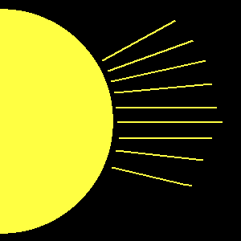
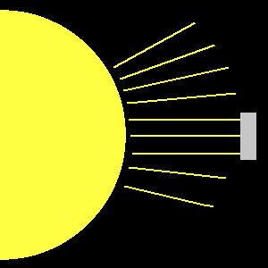
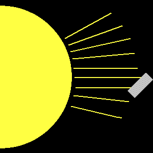

Why do solar arrays need to be oriented towards the Sun?
Samuel PetersJUL 15, 2019
The amount of power available to a solar panel is proportional to the amount of light that reaches it.
The more light it
gets, the more power it produces.
In space, the most important source of light is the Sun. The Sun emits just about the same amount of
light in all
directions.

When solar panels are pointed right at the Sun(or aligned with the Sun), then they intercept the most
light rays.

When the solar panel is out of alignment, it intercepts fewer light rays.

To get the most power, solar panels have to be pointed directly at the Sun. DS1 is built so that the
solar panels can be
pivoted as DS1 moves. Thus, they can always stay in the direct path of the light rays no matter how the
spacecraft is
pointed.
Sometimes, satellite scientists purposefully orient the solar panels "off point," or out of direct
alignment from the
Sun. If the batteries are completely charged and the amount of electricity is needed is lower than the
amount made if
the panels are "on point," generating that much power isn't necessary. The extra power will just be
vented by a shunt
into space as heat.